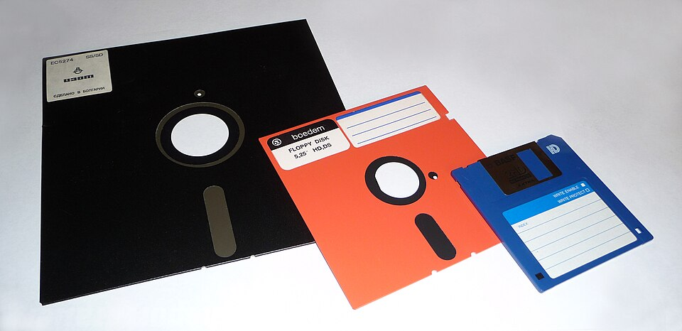
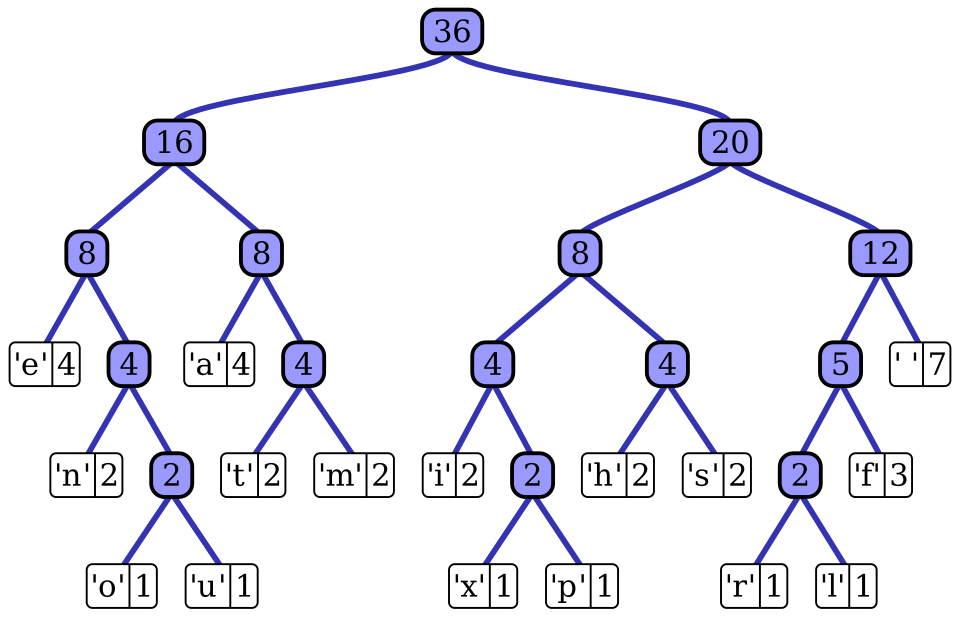
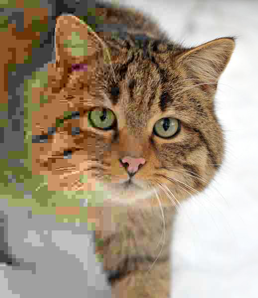

Good morning!
Nur das Schöne wird die Welt retten!
Fjodor Dostojewski
Nicht verzagen, Doc Alvers fragen!
Informatik — Grundkurs 11
Wahlbereich Datenkomprimierung und Fehlererkennung — Lauflänge, Huffman und warum JPEG kleiner ist
Nicht verzagen, Doc Alvers fragen!
Kapitel 01
Redundanz, verlustfrei, verlustbehaftet

Nicht verzagen, Doc Alvers fragen!
Das Projekt ist abgeschlossen — präsentiert, ausgewertet, benotet
Heute beginnt der Wahlbereich: Datenkomprimierung und Fehlererkennung
Aus Lernbereich 2 wisst ihr: Ein Foto mit 800 × 600 Bildpunkten und 24 Bit braucht 1 440 000 Byte
Leitfrage: Wie passt dieselbe Botschaft in weniger Bits — und was geht dabei verloren?
Nächste Woche die Kehrseite: zusätzliche Bits, mit denen man Fehler erkennt
Nicht verzagen, Doc Alvers fragen!
| Medium | Rechnung | unkomprimiert |
|---|---|---|
| Foto, 800 × 600 Punkte | 480 000 Punkte × 3 Byte | 1 440 000 Byte, rund 1,4 MB |
| 1 Minute Musik in CD-Qualität | 44 100 × 2 Byte × 2 Kanäle × 60 s | 10 584 000 Byte, rund 10,6 MB |
| 1 Sekunde Full-HD-Video | 1920 × 1080 × 3 Byte × 25 Bilder | 155 520 000 Byte, rund 155 MB |
Ein MP3 mit 128 kbit/s braucht für die Minute nur rund 1 MB — etwa ein Elftel
Ohne Komprimierung gäbe es kein Streaming und keine Fotos im Messenger
Nicht verzagen, Doc Alvers fragen!
Jede Komprimierung beruht auf Redundanz — Anteilen, die keine zusätzliche Information tragen
Wiederholungen und Muster lassen sich kürzer beschreiben
Wo keine Redundanz ist, lässt sich nichts einsparen: Zufallsdaten sind praktisch nicht komprimierbar
Eine schon komprimierte Datei hat ihre Redundanz verloren — ein zweiter Durchgang macht sie oft größer
Kompressionsrate = Originalgröße geteilt durch komprimierte Größe: , also 5 : 1
Nicht verzagen, Doc Alvers fragen!
Verlustfrei
das Original kommt exakt zurück
Pflicht bei Texten und Programmen
Beispiele: ZIP, PNG
Text mit vielen Wiederholungen: sehr gut
Verlustbehaftet
lässt weg, was kaum auffällt
nur bei Bild, Ton und Video
Beispiele: JPEG, MP3
was weg ist, bleibt weg
Nicht verzagen, Doc Alvers fragen!
Kapitel 02
Zwei Verfahren zum Selbermachen

Nicht verzagen, Doc Alvers fragen!
Englisch Run Length Encoding (RLE)
Idee: Folgen gleicher Zeichen werden durch Anzahl und Zeichen ersetzt
AAAAB wird zu 4A1B — üblich ist die Anzahl vor dem Zeichen
AAABBBBCC wird zu 3A4B2C — nicht vorkommende Zeichen werden nicht notiert
Kurze Codes für häufige Zeichen sind etwas anderes — das ist Huffman
Nicht verzagen, Doc Alvers fragen!
| Eingabe | codiert | Zeichen vorher | Zeichen nachher |
|---|---|---|---|
| AAABBBBCC | 3A4B2C | 9 | 6 |
| AAAAAAAAAABB | 10A2B | 12 | 5 |
| Bildzeile: 20 weiß, 3 schwarz, 20 weiß | 20W3S20W | 43 | 8 |
| ABCABC | 1A1B1C1A1B1C | 6 | 12 |
Lohnt nur bei langen Läufen — bei ABCABC wird die Datei doppelt so lang
Deshalb prüfen Formate, ob sich die Codierung lohnt
Nicht verzagen, Doc Alvers fragen!
Häufige Zeichen bekommen kurze Codes, seltene lange
Die Häufigkeit steuert die Codelänge — der mittlere Bedarf pro Zeichen sinkt
Bei gleich häufigen Zeichen bringt Huffman nichts
Dieselbe Idee steckt im Morsecode: Das häufige E ist ein einziger Punkt
Nicht verzagen, Doc Alvers fragen!
1. Häufigkeiten zählen — im Wort ANANAS: A 3-mal, N 2-mal, S 1-mal
2. Die zwei seltensten zu einem Knoten verbinden, Häufigkeiten addieren: S + N = 3
3. Wiederholen, bis nur ein Baum übrig ist: (S N) + A = 6
4. Jede Abzweigung links mit 0, rechts mit 1 beschriften
Der Weg von der Wurzel zum Zeichen ist sein Code: A = 0, N = 10, S = 11
Nicht verzagen, Doc Alvers fragen!
| Zeichen | Häufigkeit | Code | Bits im Text |
|---|---|---|---|
| A | 3 | 0 | 3 × 1 = 3 |
| N | 2 | 10 | 2 × 2 = 4 |
| S | 1 | 11 | 1 × 2 = 2 |
| Summe | 6 Zeichen | 9 Bit |
ANANAS wird zu 0 10 0 10 0 11 — also 010010011
Mit 2 Bit je Zeichen wären es 12 Bit, mit 8 Bit je Zeichen sogar 48 Bit
Nicht verzagen, Doc Alvers fragen!
Präfixfrei heißt: Kein Codewort ist der Anfang eines anderen
Huffman-Codes sind immer präfixfrei — deshalb braucht man kein Trennzeichen
Mit A = 0, B = 10, C = 11 zerfällt 01011 eindeutig in 0 | 10 | 11 = ABC
Gegenbeispiel A = 0, B = 01, C = 1: Ist 01 nun B — oder A und C?
Nicht verzagen, Doc Alvers fragen!
Verfahren wie LZ77 ersetzen wiederkehrende Zeichenfolgen durch einen Verweis auf ein früheres Vorkommen
Notiert werden Abstand und Länge — das Wörterbuch entsteht aus dem Text selbst
Beispiel: „Informatik ist Informatik“ wird zu „Informatik ist (15, 10)“
Heißt: 15 Zeichen zurückgehen, 10 Zeichen abschreiben
ZIP und PNG beruhen darauf — kombiniert mit Huffman
Nicht verzagen, Doc Alvers fragen!
Entropie: der mittlere Informationsgehalt je Zeichen — die untere Grenze der verlustfreien Komprimierung
— für ANANAS: Bit je Zeichen, Huffman schafft 1,5
Je gleichverteilter die Zeichen, desto höher die Entropie
Kein Verfahren verkleinert jede Datei: Sonst könnte man beliebig oft komprimieren, bis nichts übrig ist
Es gibt Dateien mit Bit, aber nur kürzere
Nicht verzagen, Doc Alvers fragen!
Kapitel 03
Weglassen, was kaum auffällt

Nicht verzagen, Doc Alvers fragen!
PNG — verlustfrei
behält jedes Pixel exakt
gut für Grafiken mit klaren Kanten
gut für Screenshots und Logos
JPEG — verlustbehaftet
vereinfacht Farbverläufe und feine Details
lässt weg, was das Auge kaum wahrnimmt
gut für Fotos — viel kleiner als PNG
Nicht verzagen, Doc Alvers fragen!
Jedes erneute Speichern als JPEG wirft wieder Information weg
Die Verluste summieren sich sichtbar
Deshalb: im verlustfreien Format bearbeiten, zuletzt als JPEG exportieren
Die Qualitätsstufe steuert den Zielkonflikt: kleinere Datei gegen sichtbaren Verlust
Für ein Vorschaubild darf stärker komprimiert werden — für ein Archivbild nicht
Nicht verzagen, Doc Alvers fragen!
Aufeinanderfolgende Bilder ähneln sich stark
Gespeichert wird vor allem die Änderung zum vorigen Bild
Regelmäßig kommt ein Vollbild (Keyframe): Dort kann man einsteigen, und Fehler wirken nicht ewig weiter
Teuer sind Schnitte und schnelle Bewegung — dann ändert sich fast alles
Nicht verzagen, Doc Alvers fragen!
Übertragung und Speicherung kosten Energie und Bandbreite
Weniger übertragene Daten heißt: weniger Strom in Netz und Rechenzentrum
Zu große Bilder auf Webseiten sind ein häufiger Posten
Passendes Format und passende Größe sparen spürbar — ohne sichtbaren Nachteil
Nicht verzagen, Doc Alvers fragen!
Komprimieren heißt Redundanz entfernen: Verlustfrei kommt das Original exakt zurück, verlustbehaftet fällt weg, was kaum auffällt — und kein Verfahren verkleinert jede Datei.
Merksatz
Nicht verzagen, Doc Alvers fragen!
David Huffman fand sein Verfahren als Student — statt der Abschlussprüfung schrieb er eine Hausarbeit; veröffentlicht 1952
Faxgeräte codieren jede Zeile als Lauflängen von Weiß und Schwarz — und die Längen noch nach Huffman
Eine 3,5-Zoll-Diskette fasst 1 474 560 Byte — ein unkomprimiertes 800 × 600-Foto passt gerade so darauf
JPEG heißt nach der Joint Photographic Experts Group, die das Format 1992 normte
Nicht verzagen, Doc Alvers fragen!
Unplugged-Experiment: ein Schwarz-Weiß-Pixelbild Zeile für Zeile als Lauflängen diktieren — die Partnerin zeichnet nur nach den Zahlen
Im Kopf: AAAABBBCCD und ABABAB lauflängencodieren — wann lohnt es sich?
Vergleichen im PC-Kabinett: dasselbe Foto als PNG und als JPEG in zwei Qualitätsstufen speichern — Größen notieren
Huffman: für euren Vornamen Häufigkeiten zählen und einen Code bauen
Zum Schluss: Aufgaben (20) auf der Planseite — Lösung pro Aufgabe zum Aufklappen
Nicht verzagen, Doc Alvers fragen!